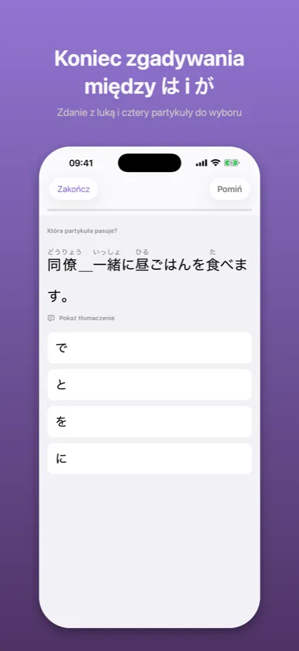
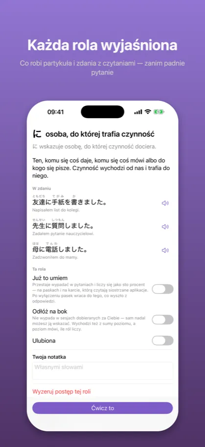
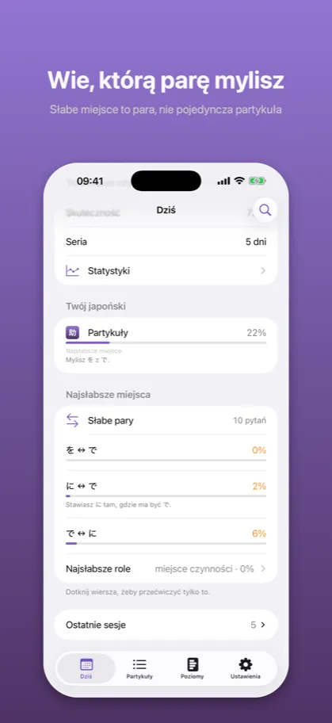

Joshi: Partykuły japońskie助詞
Gramatyka i ćwiczenia JLPT
App Store →Aplikacja darmowa, z zakupem w środku
Wiedzieć, co znaczy に, to nie to samo co wiedzieć, kiedy jest で. Dziewięćset zdań, jedna luka, cztery partykuły – aż właściwa przychodzi sama.
Jak to wygląda
{kind=link}
Cel dnia, poziom, na którym jesteś, i jedno dotknięcie do pytania
{kind=link}

Zdanie z luką i cztery partykuły do wyboru
{kind=link}
Po pomyłce widać rolę partykuły i parę, którą mylisz
{kind=link}

Co robi partykuła i zdania z czytaniami — zanim padnie pytanie
{kind=link}

Słabe miejsce to para, nie pojedyncza partykuła
Opis ze sklepu
Japońskie partykuły to nie lista do zapamiętania. Każda zmienia to, o czym zdanie mówi.
Można wiedzieć, że に wskazuje cel ruchu, a で miejsce czynności – i wahać się za każdym
razem. Rozumienie reguły i sięganie po nią bez namysłu to dwie różne umiejętności, a przez
zdanie przeprowadza tylko ta druga.
JAK TO DZIAŁA
Naturalne japońskie zdanie z jedną brakującą partykułą. Cztery warianty. Dotknij jednego.
学校＿勉強します。 に で を へ
I od razu: zdanie z partykułą na miejscu, co ta partykuła tam robi, a jeśli wybrałeś tę,
z którą naprawdę się ją myli – dlaczego akurat tutaj nie pasuje.
CO ĆWICZYSZ
Dwanaście partykuł w trzydziestu ośmiu rolach. は, が i を oraz to, co znaczą w zdaniu.
に i で, czyli granica między „coś tam jest" a „coś się tam dzieje". へ, と, も, の, から,
まで i や. Potem te same partykuły w mniej oczywistej robocie: を przy drodze, którą się
idzie, を przy miejscu, z którego się wychodzi, に przy celu wyjścia, で przy przyczynie,
と zamykające przytoczenie, の zamieniające całe zdanie w rzeczownik.
CO JEST TU INACZEJ
Większość aplikacji umie powiedzieć, że に masz na 61 %. Ta liczba nie mówi, co z tym
zrobić.
Joshi liczy osobno **pary mylące** – dwie role, które biorą się jedna za drugą. Zamiast
„ćwicz więcej に" potrafi powiedzieć: mylisz に z で – i podsunąć zdania, w których jedno
jest poprawne, a drugie kuszące. Słabe pary są osobnym trybem ćwiczenia.
DLACZEGO BŁĘDNE WARIANTY SĄ UCZCIWE
Wariant błędny musi być w tym zdaniu naprawdę niepoprawny. Partykuła, która dałaby poprawne
japońskie zdanie o innym znaczeniu, nie jest wariantem błędnym – jest drugą odpowiedzią,
a pytanie z dwiema odpowiedziami uczy nieprawdy. Ta reguła kosztowała aplikację jedną parę
mylącą i sporo skądinąd dobrych zdań. I to jest powód, dla którego czerwonemu krzyżykowi
można tu wierzyć.
CZYTANIA I PODPOWIEDZI
Furigana nad kanji, żeby nieznane słowo nie zamieniło pytania o partykułę w pytanie
o słownictwo. Tłumaczenie zdania jest domyślnie schowane pod dotknięciem, bo przy widocznym
tłumaczeniu dobiera się partykułę do polskiego zdania i ćwiczy co innego, nie zauważając
tego. Jedno i drugie jest ustawieniem: nigdy, zawsze albo po dotknięciu.
Każde zdanie da się też usłyszeć. Głośniczek czyta je po japońsku, biorąc czytanie, które
zna katalog – a nie zgadując z kanji. Bez sieci.
POSTĘP, KTÓRY COŚ ZNACZY
Opanowanie jest przycięte tym, ile jest dowodów, więc trzy szczęśliwe trafienia nie
wyglądają jak umiejętność. Pięć poziomów, dwanaście partykuł i trzynaście par mylących mają
własne paski. Nic tu nie liczy samych odpowiedzi.
Bez monet, bez kamieni, bez energii, bez serii, którą traci się przez jeden dzień przerwy.
CO JEST ZA DARMO
Poziomy 1 i 2 w całości – は, が, を, に, で i へ, czyli większość partykuł w zwykłym zdaniu.
Jeden zakup, raz, otwiera poziomy 3–5, ćwiczenie słabych par i całą pulę zdań. Bez
subskrypcji.
PRYWATNOŚĆ
Bez konta. Bez reklam. Bez analityki. Bez jakiegokolwiek zapytania sieciowego poza samym
zakupem. Wszystko, co robisz, zostaje na Twoim urządzeniu – i możesz to w każdej chwili
wyeksportować.
Powyższy opis jest tym samym tekstem, który stoi na karcie aplikacji w App Store – pochodzi z tego samego pliku.
App Store →Aplikacja darmowa, z zakupem w środku
Częste pytania
Czego uczy Joshi?
Japońskie partykuły to nie lista do zapamiętania. Każda zmienia to, o czym zdanie mówi.
Można wiedzieć, że に wskazuje cel ruchu, a で miejsce czynności – i wahać się za każdym
razem. Rozumienie reguły i sięganie po nią bez namysłu to dwie różne umiejętności, a przez
zdanie przeprowadza tylko ta druga.
Ile kosztuje Joshi?
Poziomy 1 i 2 w całości – は, が, を, に, で i へ, czyli większość partykuł w zwykłym zdaniu.
Jeden zakup, raz, otwiera poziomy 3–5, ćwiczenie słabych par i całą pulę zdań. Bez
subskrypcji.
Czy działa bez internetu i bez konta?
Bez konta. Bez reklam. Bez analityki. Bez jakiegokolwiek zapytania sieciowego poza samym
zakupem. Wszystko, co robisz, zostaje na Twoim urządzeniu – i możesz to w każdej chwili
wyeksportować.
Dokumenty
Pozostałe aplikacje
- Kaname: Gramatyka japońska — Powtórki JLPT: N5 N4 N3 N2 N1
- Bunmyaku: Japoński w zdaniu — Słówka, kanji i furigana
- Katsuyokei: Odmiana japońska — Czasowniki, formy, fiszki
- Kazoekata: Liczniki japońskie — Liczenie, kanji, ćwiczenia
- Kuzushi: Mowa potoczna — Anime, dorama i skróty
- Shindan: Poziom japońskiego — Test JLPT: N5 N4 N3 N2 N1
- Keigo: Grzeczność japońska — Japoński formalny do pracy
- Kifuku: Akcent japoński — Wymowa, intonacja, słuchanie
- Onomatope: Dźwięki i wyrażenia — Słówka z mangi i anime